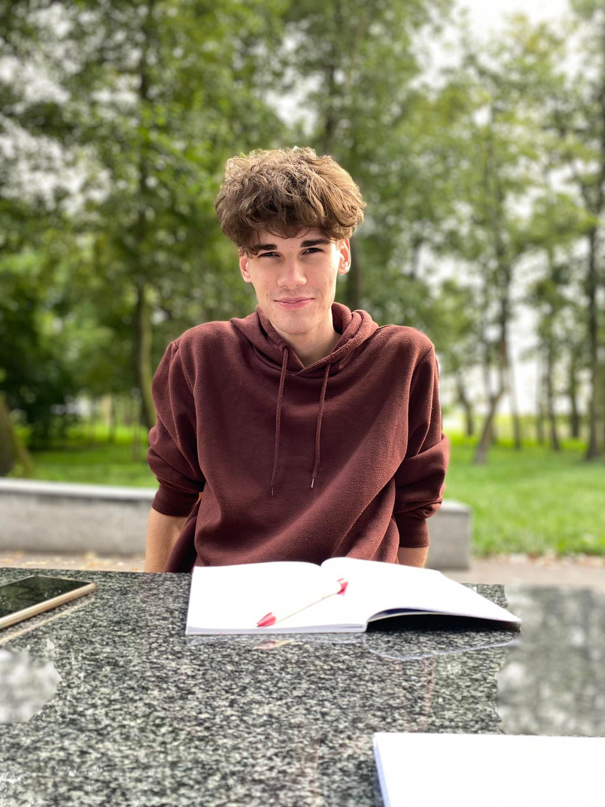

O Mnie
Cześć! Nazywam się Karol Wziątek i jestem studentem drugiego roku informatyki algorytmicznej na Politechince Wrocławskiej. W czasie wolnym od studiów udzielam korepetycji, angażuję się w życie społeczne i oddaje wielorakim pasjom. Pochodzę z Lublina, gdzie spędziłem swoje dzieciństwo i lata wczesnej młodości. Ukończyłem I LO im. Stanisława Staszcia w Lublinie, które zakończyłem, zdając celująco maturę.
Zainteresowania
- Algorytmika
- Teoria Liczb
- Pisanie aplikacji desktopowych i moblinych
- Nauka języków obcych
- Tenis stłowy
- Siatkówka
- Fantastyka
- Wędrówki wysokogórskie
Kontakt
Email: wziatek.karol04@gmail.com
Telefon: 798-350-455